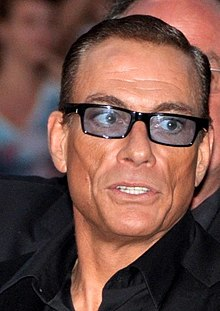

ჟან-კლოდ ვან დამი (ფრანგ. Jean-Claude Van Damme, სახელი დაბადებისას — ჟან-კლოდ კამილ ფრანსუა ვან ვარენბერგი, ფრანგ. ნიდერლ. Jean-Claude Camille François Van Varenberg; დ. 18 ოქტომბერი 1960, ბერკემ-სენტ-აგათი, ბრიუსელი, ბელგია) — ჰოლივუდში მოღვაწე ფლამანდიელი წარმომავლობის ამერიკელი მსახიობი, რეჟისორი, სცენარისტი, პროდიუსერი, საბრძოლო სცენების დამდგმელი, Rodin Entertainment-ის დამფუძნებელი და მეთაური. წარსულში სახელოვანი კარატისტი, კულტურისტი და კიკბოქსიორი. 1978 წელს დაიკავა მე-3 ადგილი თავის წონით კატეგორიაში ევროპის სამოყვარულო ჩემპიონატში ბოდიბილდინგში, ხოლო ერთი წლის შემდეგ იასპარეზა ბელგიის ჩემპიონატში, რომელიც ატარებდა სახელწოდებას „მისტერ ბელგია“, სადაც პირველი ადგილი დაიკავა და გახდა აბსოლუტური ჩემპიონი. 1979 წელს გახდა ევროპის ჩემპიონი კარატესა და კიკბოქსინგში საშუალო წონით კატეგორიაში პროფესიონალთა შორის. აგრეთვე შავი ქამრის მფლობელია. თავისი საბრძოლო კარიერის განმავლობაში საერთო ჯამში ჩაატარა 22 ბრძოლა, რომელთაგან 20-ჯერ ხვდა წილად მოგება, ხოლო 2-ჯერ დამარცხდა. მონაწილეობა აქვს მიღებულ მრავალ ფილმში, რომელთაგან წარმატებული აღმოჩნდა: „სისხლიანი სპორტი“ (1988), „კიქბოქსიორი“ (1989), „ორმაგი დარტყმა“ (1991), „უნივერსალური ჯარისკაცი“ (1992), „რთული სამიზნე“ (1993), „დროის პატრული“ (1994), „JCVD“ (2008), „შეუჩერებელნი 2“ (2012). 3-ჯერ იყო ზედიზედ მომინირებული MTV Movie Awards-ის კინოპრემიაზე კატეგორიაში „ყველაზე სასურველი მამაკაცი“, — 1992, 1993 და 1994 წლებში.
